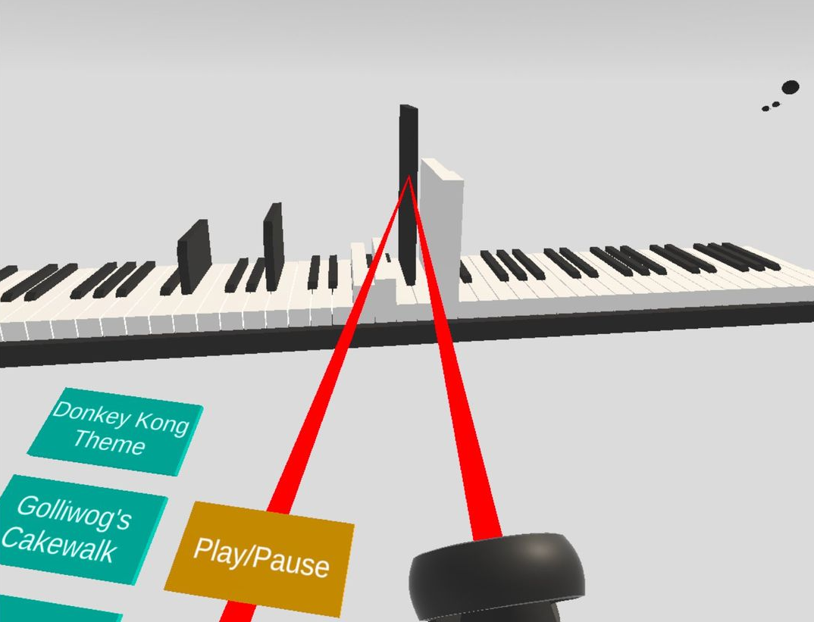
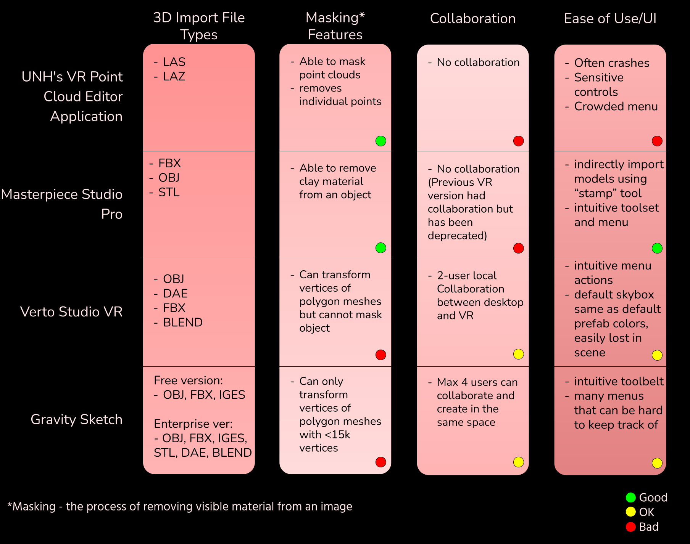

Virtual Reality for Data Visualization - Spring 2022 @ Brown University
As a piano teacher at the ripe old age of 21 (at least, that's what most of my 7-year-old
students think), I hear one thing more often than I thought I would - "I learned the notes
by looking at a video on YouTube!"
Who knew the technological generation gap was real, hm?
Either way, I appreciate that these videos motivate my students to learn notes, but how to play
the notes is a different question. What's loud, what's soft? That's harder to tell visually.

That's what I had to answer before I could start. So, I used the example of
looking into existing VR software that allow users to mask (erase material from) models.
Not inherently related to a piano, but exploring this helped me come up with metrics
to keep in mind when creating my own application.

Kids learn in different ways, and one of those is visually. On a normal piano, or even in 2D,
you can see what notes to play, but it is harder to distinguish volume just by looking at the notes.
Sure, one could differentiate the volumes by ear but not everyone has perfect pitch!
Now, despite the features I was able to implement smoothly, there were also a few things
that I wish I had spent more time on to debug. For example, I was able to get everyone in the
same room using Normcore but, I didn't have time to make synced collaboration! Two people
could be in the same room but would not be able to hear the other person's piano. I know, I
want this to happen in the future too, since I could see this being a useful tool in my
studio!
There are also a handful of other features I would love to see in this app: loading your own
MIDI files, notes being different colors based on which hand is playing it, synced sheet music,
note letter names, seeing what notes you'll have to play next, etc. While I wasn't able to implement
all of these in the month I had for this project, I hope to see them in the future!